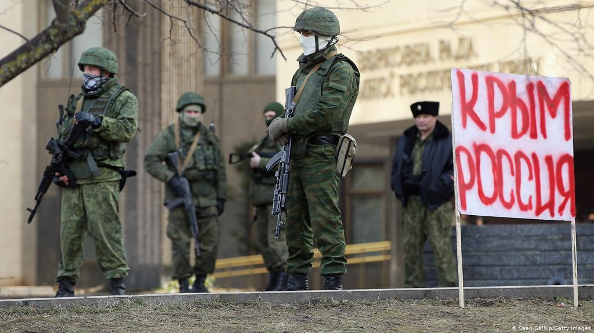

Poniżej opisane są 3 konflikty, które kiedykolwiek miały miejsce w Europie.
Czas: 20 lutego 2014 – 26 marca 2014
Miejsce: Półwysep Krymski
Strony:
Siły:
Wynik:
Straty:
Czas: 11 grudnia 1994 – 31 sierpnia 1996
Miejsce: Czeczenia, Kaukaz Północny
Strony:
Siły:
Wynik: niejednoznaczny
Straty:
Czas: 11 października 1999 – 15 kwietnia 2009
Miejsce: Czeczenia, Kaukaz Północny
Strony:
Siły:
Wynik: Zwycięstwo Rosji, utrzymanie integralności terytorialnej Federacji Rosyjskiej
Straty: